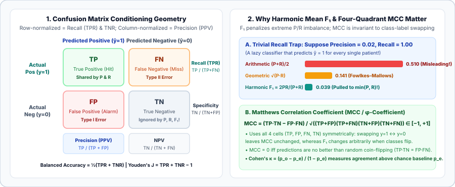

Classification Metrics: Confusion Matrix Geometry, Precision, Recall, $F_\beta$, MCC, and Cohen’s $\kappa$
Every thresholded classification metric is a projection of the confusion matrix. Understand row-conditioned vs. column-conditioned rates, derive $F_1$ and $F_\beta$ from van Rijsbergen’s effectiveness functional, prove why Matthews Correlation Coefficient (MCC) is the Pearson correlation of binary variables, and compare Macro, Micro, and Weighted multiclass reductions.
Once a classifier converts continuous logits or probabilities $\hat p(y=1\mid x)$ into hard class decisions $\hat y = \mathbf 1[\hat p \ge \tau]$ at a decision threshold $\tau$, its entire behavior on $N$ evaluation examples is summarized by the confusion matrix. Yet different summaries of those same four counts—Accuracy, $F_1$, Balanced Accuracy, MCC, or Cohen’s $\kappa$—can rank two models in completely opposite orders. Let us see why.
1. The $2\times 2$ Confusion Matrix as Conditional Probability
For binary labels $y \in \{0, 1\}$ and hard predictions $\hat y \in \{0, 1\}$ over $N = P_{\text{act}} + N_{\text{act}}$ examples, every sample lands in one of four cells: True Positives ($TP$), False Positives ($FP$, Type I error), False Negatives ($FN$, Type II error), and True Negatives ($TN$).
Overall Accuracy divides the diagonal sum by $N$, which decomposes as a prevalence-weighted convex combination of the two class-conditional accuracies ($\pi = \frac{TP+FN}{N}$ is the positive class prevalence):
When $\pi = 0.001$ (a $1\text{-in-}1000$ disease or fraud event), a constant dummy classifier $\hat y \equiv 0$ has $\operatorname{TPR}=0, \operatorname{TNR}=1$, and achieves $\operatorname{Accuracy} = 99.9\%$ while missing $100\%$ of positive cases! To avoid prevalence collapse, we condition either on the rows (actual ground truth $y$) or on the columns (predicted label $\hat y$):
- Row-Conditioned Rates (Conditioned on Ground Truth $y$, Invariant to Prevalence $\pi$):
$$\operatorname{Recall} = \operatorname{Sensitivity} = \operatorname{TPR} = \Pr(\hat Y=1 \mid Y=1) = \frac{TP}{TP + FN},\qquad \operatorname{FNR} = 1 - \operatorname{TPR} = \frac{FN}{TP + FN},$$$$\operatorname{Specificity} = \operatorname{TNR} = \Pr(\hat Y=0 \mid Y=0) = \frac{TN}{TN + FP},\qquad \operatorname{FPR} = 1 - \operatorname{TNR} = \frac{FP}{TN + FP}.$$Averaging the two row-conditioned accuracies equally gives Balanced Accuracy, and subtracting $1$ gives Youden’s $J$ statistic (Informedness), while their geometric mean gives the G-Mean:$$\operatorname{Balanced\ Acc} = \frac{\operatorname{TPR} + \operatorname{TNR}}{2},\qquad J = \operatorname{TPR} + \operatorname{TNR} - 1 = \operatorname{TPR} - \operatorname{FPR},\qquad \operatorname{G-Mean} = \sqrt{\operatorname{TPR}\cdot\operatorname{TNR}}.$$
- Column-Conditioned Rates (Conditioned on Prediction $\hat y$, Dependent on Prevalence $\pi$ via Bayes’ Rule):
$$\operatorname{Precision} = \operatorname{PPV} = \Pr(Y=1 \mid \hat Y=1) = \frac{TP}{TP + FP} = \frac{\pi\operatorname{TPR}}{\pi\operatorname{TPR} + (1-\pi)\operatorname{FPR}},$$$$\operatorname{NPV} = \Pr(Y=0 \mid \hat Y=0) = \frac{TN}{TN + FN},\qquad \operatorname{FDR} = 1 - \operatorname{Precision} = \frac{FP}{TP + FP}.$$

2. Why $F_1$ Is a Harmonic Mean and How $F_\beta$ Weights Recall vs. Precision
Suppose we want a single scalar summarizing Precision $P$ and Recall $R$. Why not use their arithmetic mean $\frac{P+R}{2}$? Consider a rare-event dataset with $2\%$ positives where a trivial model predicts $\hat y = 1$ for every sample. It achieves $R = 1.00$ and $P = 0.02$. Its arithmetic mean is $\frac{1.00 + 0.02}{2} = 0.51$—over $50\%$! The harmonic mean ($F_1$ score) is bounded closer to $\min(P, R)$ ($\min(P,R) \le H(P,R) \le G(P,R) \le A(P,R)$) because it averages the reciprocals (rates per true positive $TP$):
Notice the clean confusion-matrix interpretation: $F_1$ is simply $TP$ divided by $TP$ plus the arithmetic average of the two error counts $\frac{FP + FN}{2}$! (The geometric mean $\sqrt{P\cdot R}$ is known as the Fowlkes–Mallows Index.)
When false negatives are $\beta$ times as costly as false positives, van Rijsbergen (1979) defined the $F_\beta$ score by weighting the reciprocal of Recall by $\frac{\beta^2}{1+\beta^2}$ and the reciprocal of Precision by $\frac{1}{1+\beta^2}$ so that $\frac{\partial F_\beta}{\partial R} = \frac{\partial F_\beta}{\partial P}$ precisely when $\frac{R}{P} = \beta$:
- $F_{0.5}$ ($\beta = 0.5$): Weights Precision $2\times$ as heavily as Recall (penalizes $FP$ $4\times$ more than $FN$ in the denominator)—used in spam filtering, search top results, and precision-critical alerting.
- $F_2$ ($\beta = 2.0$): Weights Recall $2\times$ as heavily as Precision (penalizes $FN$ $4\times$ more than $FP$)—used in medical screening, tumor detection, and safety-critical anomaly recall.
3. Matthews Correlation Coefficient (MCC) and Cohen’s Kappa ($\kappa$)
Look closely at $F_1 = \frac{2TP}{2TP + FP + FN}$: the True Negative count $TN$ does not appear anywhere in the formula! Consequently, $F_1$ is asymmetric under class-label swapping ($y \mapsto 1-y, \hat y \mapsto 1-\hat y$). The Matthews Correlation Coefficient (MCC) (Matthews, 1975; known in statistics as the Pearson $\phi$ coefficient) is the exact Pearson correlation coefficient $\rho(Y, \hat Y) = \frac{\operatorname{Cov}(Y, \hat Y)}{\sqrt{\operatorname{Var}(Y)\operatorname{Var}(\hat Y)}}$ between the binary vectors $Y, \hat Y \in \{0, 1\}^N$:
- Four-quadrant symmetry: Swapping positive and negative labels interchanges $TP \leftrightarrow TN$ and $FP \leftrightarrow FN$, leaving $\operatorname{MCC}$ strictly invariant!
- High score requires all four quadrants: $\operatorname{MCC} \approx +1$ is possible only if both classes are predicted with high recall and high precision simultaneously. Any constant predictor ($\hat y \equiv 1$ or $\hat y \equiv 0$) or independent coin flip satisfies $TP\cdot TN = FP\cdot FN \implies \operatorname{MCC} = 0$.
A related chance-corrected metric used in both classification and human/LLM inter-annotator reliability is Cohen’s Kappa ($\kappa$) (Cohen, 1960), which compares observed agreement $p_o = \operatorname{Accuracy}$ against the expected agreement $p_e$ of two independent raters with the same marginal class frequencies:
Worked numerical example: The Label-Swap Paradox of $F_1$ vs. MCC
Suppose on $N = 100$ samples we observe $TP = 1, FN = 1, FP = 8, TN = 90$:
- Original labeling ($y=1$ is minority): $P = \frac{1}{9} = 0.111$, $R = \frac{1}{2} = 0.500 \implies F_1 = \frac{2(1)}{2(1) + 8 + 1} = \frac{2}{11} \approx \mathbf{0.182}$.
- Now swap the label encoding ($0 \leftrightarrow 1$ on the exact same predictions!): Now $TP' = 90, TN' = 1, FP' = 1, FN' = 8 \implies F_1' = \frac{2(90)}{180 + 1 + 8} = \frac{180}{189} \approx \mathbf{0.952}$! The exact same classifier jumped from $0.182$ to $0.952$ just by renaming class $0$ and class $1$.
- MCC on both labelings:
$$\operatorname{MCC} = \frac{1(90) - 8(1)}{\sqrt{(9)(2)(98)(91)}} = \frac{82}{\sqrt{160{,}524}} = \frac{82}{400.65} \approx \mathbf{+0.205}\quad\text{(identical under both labelings!)}.$$
4. Multiclass & Multilabel Aggregations: Macro, Micro, Weighted, and Hamming
For $C > 2$ classes with confusion matrix $M \in \mathbb N^{C \times C}$ ($M_{c,k} = \text{count of actual } c \text{ predicted as } k$), per-class counts are $TP_c = M_{c,c}$, $FP_c = \sum_{r\ne c} M_{r,c}$, and $FN_c = \sum_{k\ne c} M_{c,k}$ (with support $s_c = TP_c + FN_c$ and $\sum_{c=1}^C s_c = N$). There are three ways to aggregate per-class scores $F_{1,c}$:
- Identity for single-label multiclass: In single-label classification where every sample receives exactly one prediction, every mistake is simultaneously a False Negative for its true class and a False Positive for its predicted class, so $\sum_c FP_c = \sum_c FN_c = N - \sum_c TP_c$. Therefore:
$$\text{In single-label multiclass:}\quad \operatorname{Micro-Precision} = \operatorname{Micro-Recall} = \operatorname{Micro-}F_1 = \operatorname{Accuracy}!$$To evaluate tail classes fairly under class imbalance, always report Macro-$F_1$ (which gives a $10$-sample minority class the exact same $1/C$ weight as a $100{,}000$-sample majority class).
- Multilabel classification ($y_i, \hat y_i \in \{0, 1\}^C$): When a sample can belong to multiple classes simultaneously, we also measure Subset Accuracy (Exact Match) $\frac{1}{N}\sum_{i=1}^N \mathbf 1[\hat y_i = y_i]$ and Hamming Loss $\frac{1}{NC}\sum_{i=1}^N \sum_{c=1}^C \mathbf 1[\hat y_{i,c} \ne y_{i,c}]$.
5. Compute all Confusion-Matrix Metrics in Python / PyTorch
import torch
def binary_classification_report(y_true: torch.Tensor, y_pred: torch.Tensor, beta: float = 1.0):
tp = ((y_true == 1) & (y_pred == 1)).sum().float()
tn = ((y_true == 0) & (y_pred == 0)).sum().float()
fp = ((y_true == 0) & (y_pred == 1)).sum().float()
fn = ((y_true == 1) & (y_pred == 0)).sum().float()
n = tp + tn + fp + fn
acc = (tp + tn) / n
prec = tp / (tp + fp + 1e-12)
rec = tp / (tp + fn + 1e-12)
spec = tn / (tn + fp + 1e-12)
bal_acc = 0.5 * (rec + spec)
f_beta = (1 + beta**2) * prec * rec / (beta**2 * prec + rec + 1e-12)
mcc_denom = torch.sqrt((tp + fp) * (tp + fn) * (tn + fp) * (tn + fn)) + 1e-12
mcc = (tp * tn - fp * fn) / mcc_denom
p_e = ((tp + fn) * (tp + fp) + (tn + fp) * (tn + fn)) / (n * n)
kappa = (acc - p_e) / (1.0 - p_e + 1e-12)
return {"Acc": round(acc.item(), 4), "BalAcc": round(bal_acc.item(), 4),
"P": round(prec.item(), 4), "R": round(rec.item(), 4),
f"F_{beta}": round(f_beta.item(), 4), "MCC": round(mcc.item(), 4), "Kappa": round(kappa.item(), 4)}
# Reproduce the worked numerical example (TP=1, FN=1, FP=8, TN=90)
y_true = torch.tensor([1, 1] + [0]*8 + [0]*90)
y_pred = torch.tensor([1, 0] + [1]*8 + [0]*90)
print("Original labels:", binary_classification_report(y_true, y_pred))
print("Swapped labels:", binary_classification_report(1 - y_true, 1 - y_pred))6. Questions worth answering
Because Recall $\Pr(\hat Y=1 \mid Y=1)$ and Specificity $\Pr(\hat Y=0 \mid Y=0)$ condition on the ground-truth class $Y$, which is an intrinsic property of the classifier’s score distributions $f(s\mid Y=1)$ and $f(s\mid Y=0)$. Precision $\Pr(Y=1 \mid \hat Y=1) = \frac{\pi\operatorname{TPR}}{\pi\operatorname{TPR} + (1-\pi)\operatorname{FPR}}$ conditions on the prediction $\hat Y=1$, so as $\pi \to 0$, false alarms $(1-\pi)\operatorname{FPR}$ swamp true detections $\pi\operatorname{TPR}$.
Use $F_1$ in information retrieval, named-entity recognition, or object detection where the "negative class" is an effectively infinite universe of non-matching documents/background boxes ($TN \to \infty$), so you intentionally want a metric invariant to $TN$. Use MCC whenever both positive and negative classes are well-defined finite populations and you want a symmetric correlation score that cannot be gamed by label flipping or high prevalence.
Sources
van Rijsbergen, Information Retrieval (2nd ed., 1979); Matthews, Comparison of the predicted and observed secondary structure of T4 phage lysozyme (BBA, 1975); Cohen, A Coefficient of Agreement for Nominal Scales (Educational and Psychological Measurement, 1960); Chicco and Jurman, The advantages of the Matthews correlation coefficient (MCC) over F1 score and accuracy in binary classification evaluation (BMC Genomics, 2020).